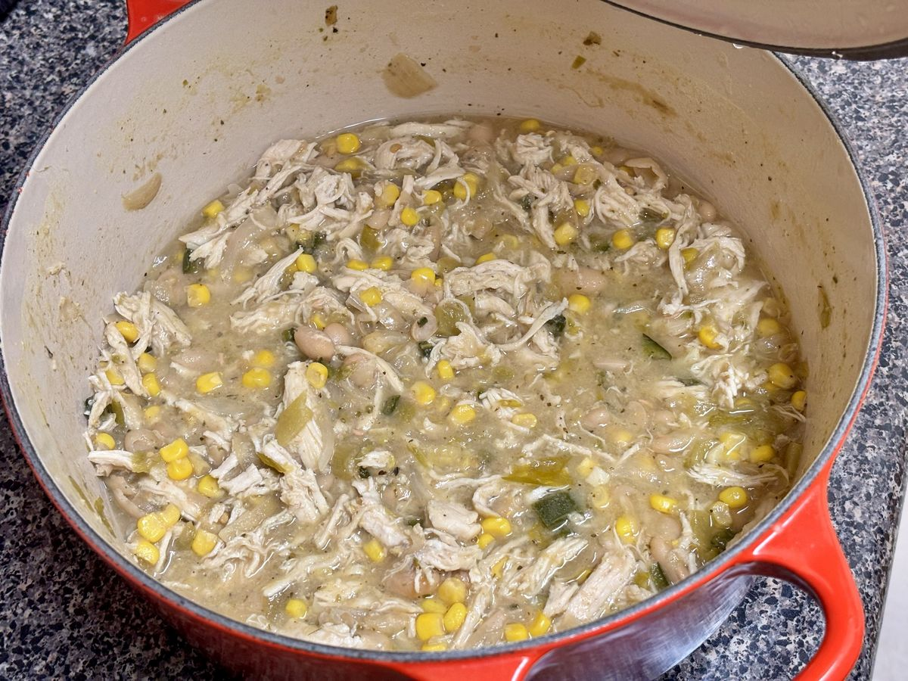

Based on https://cooking.nytimes.com/recipes/1024345-white-chicken-chili
Personal rating: 5 / 5

1 large yellow onion, chopped
1 large jalapeño pepper, seeds and ribs removed, finely chopped
2 Tbsps minced garlic (about 5 cloves)
1 tsp dried oregano
1 tsp ground cumin
1/4 tsp cayenne pepper, to taste
1 tsp kosher salt, plus more to taste (such as Diamond Crystal)
Freshly cracked black pepper
4 cups low-sodium chicken broth
2 (15-ounce) cans cannellini beans, rinsed and drained
2 (4-ounce) cans diced green chiles
2.5-3 cups cooked shredded chicken (follow the recipe to poach 1.5-1.75 lbs or from a rotisserie chicken)
1 cup fresh or frozen corn kernels
Half a lime, plus lime wedges for serving
Shredded Cheddar or Monterey Jack cheese
Pickled jalapeño slices
Diced avocado
Sour cream
Chopped fresh cilantro
Crushed tortilla chips